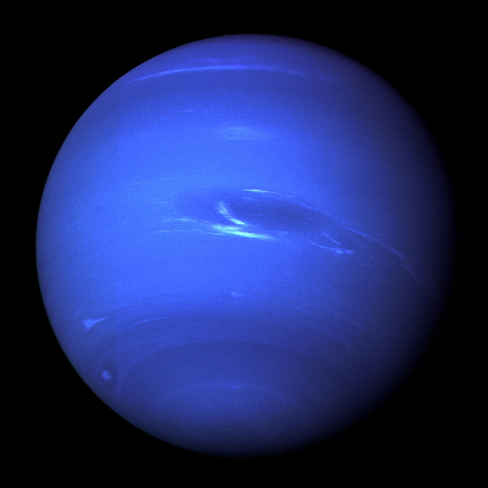

بفضل الفرقة الكبيرة ، توجد المجموعة الشمسية. منذ 13.8 مليار سنة ، اجتمعت العديد من الغازات معًا ثم تسببت في انفجار ضخم مما أدى إلى تكوين المجموعة الشمسية
:كما نعلم، تتكون المجموعة الشمسية من 8 كواكب وهي
عطارد
.عطارد هو الكوكب الأقرب من الشمس، ليس له جو، وهذا ما يفسر درجة حرارته التي يمكن أن تتراوح بين 173 درجة و 427 درجة
الزهر
.يطلق عليه الكوكب التوأم للأرض لأنهما متشابهان للغاية ، لكن الحياة غير ممكنة على هذا الكوكب بسبب العديد من الغازات السامة التي يحتويها
الأرض
.كما نعلم، هذا هو المكان الذي نعيش فيه وهو الكوكب الوحيد الذي توجد فيه الحياة ، فهو مكون من 70٪ ماء و 30٪ أرض
المريخ
.يُعرف باسم الكوكب الأحمر ، وهو أقرب كوكب إلى الأرض ، ويبذل الإنسان جهودًا كثيرة من أجل العيش هناك
المشتري
.إنه أكبر كوكب في المجموعة الشمسية ، ويبلغ حجمه 1300 مرة حجم الأرض والعواصف دقيقة هناك
زحل
.يعتبر كوكب زحل كأجمل كوكب في المجموعة الشمسية ، فهو ثاني أكبر كوكب ، حلقته عبارة عن 90٪ تلج و 10٪ من أقماره عديدة
أورانوس
أورانوس هو أحد أبرد الكواكب في المجموعة الشمسية، ويتكون بالكامل من غاز وهو ثاني أكثر الكواكب بعدًا عن الشمس
نبتون
.نبتون هو أبعد كوكب عن الشمس وأبرد كوكب, يتكون بالكامل من الغاز
